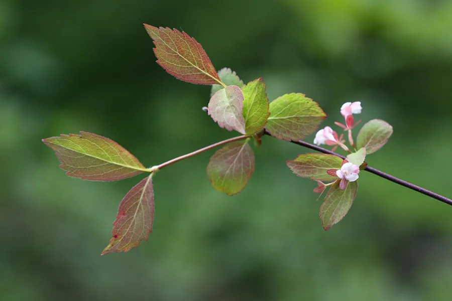

灌木与花木 · 植物界
六道木 Abelia biflora

忍冬科落叶灌木，枝条具六条纵棱，初夏开淡粉色钟状小花，耐寒耐旱，是中国北方山地与庭院常见的观花灌木。
- 分类
- 门被子植物门纲木兰纲目川续断目科忍冬科属六道木属
- 栖息环境
- 海拔 1000–2000 米的山坡灌丛、林缘与岩石缝隙，喜光耐旱
- 地理分布
- 中国华北、东北、西北及河南、陕西等地
- 保护级别
- 暂无评估；中国未列入国家重点保护野生植物名录
物种志
六道木为忍冬科六道木属落叶灌木，高 1–2 米，幼枝红褐色，老枝具六条明显纵棱，故名六道木。叶片对生，长卵形至披针形，边缘疏生锯齿。花常两朵并生于叶腋，花冠钟状，淡粉色至白色，花期 5–6 月；果实为瘦果状核果，弯曲，具宿存萼片，果期 8–9 月。
六道木原产中国华北、东北及西北山地，生于海拔 1000–2000 米的山坡灌丛与林缘。它喜光，也耐半阴，耐寒、耐旱、耐瘠薄，适宜排水良好的砂质壤土。枝条坚韧，可制手杖与工艺品；花期花量繁密，常植于庭院、岩石园与花篱。民间以茎枝入药，有祛风湿、消肿毒之效。花期长达月余，也是北方山地夏季重要的蜜源植物。
形态与习性
- 株高1–2 米，老枝具六条纵棱
- 花期5–6 月，花冠钟状淡粉色
- 果期8–9 月，核果弯曲
- 光照喜光，也耐半阴
- 水分耐旱，忌积水
- 土壤排水良好的砂质壤土
- 主要用途庭院观花、岩石园，枝条制手杖
趣味知识
- 六道木的老枝有六条纵棱，因此得名，民间也写作“六条木”。
- 它的花总是两朵并生，所以又名二花六道木。
- 六道木耐寒耐旱，是北方山地水土保持的优良灌木。
- 枝条坚韧，过去常用来制作手杖和烟袋杆。